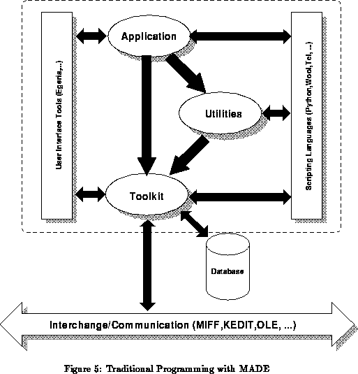

Previous: Application Architectures
Up: Application Architectures
Next: Hyperdocument Editing and Playback
Previous Page: Application Architectures
Next Page: Hyperdocument Editing and Playback
Previous: Application Architectures
Up: Application Architectures
Next: Hyperdocument Editing and Playback
Previous Page: Application Architectures
Next Page: Hyperdocument Editing and Playback
The MADE toolkit objects, plus some of the utility objects, form a powerful, albeit ``traditional'' programming environment for C++ programmers. This means that applications may be developed in C++ or C, and then linked to a set of run--time MADE libraries.
Figure 5 (which is identical to Figure 1) gives a faithful picture of a traditional program using MADE. The application program (which is usually a single UNIX, MS--DOS, or Windows--NT task) uses different toolkit objects either directly or indirectly, via some utility objects. A more elaborate application would also make use of an external database, accessed via the MADE database object facilities.

The application program may interchange data with other applications via, eg, the MIFF exchange format. Alternatively, the application program may offer services, in the form of a sophisticated multimedia server, using either the KEDIT protocol or OLE. Other applications may then either directly manipulate MADE objects via this protocol or full MADE objects may be transferred back and forth, and manipulated upon, by different modules.
Various objects, such as the interaction and animation objects, may use scripting languages, which may be revisable by the end--user. In fact, the skeleton of the application program may also be written in a scripting language instead of C or C++; the script would then manipulate MADE objects (written in mC++) via the appropriate MADE--script interpreter interface.
Another possibility is to use C++ and, eg, Motif to create the user--interface; this is when a graphics user interface application builder, like EGERIA, or Visual C++, may play an important role.